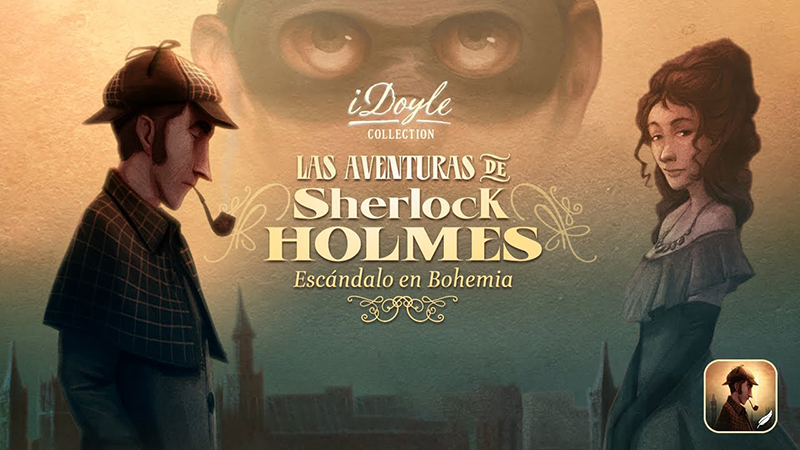
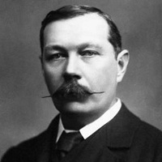

Sobre la obra
Sherlock Holmes había dado ya muestras de su genio en Estudio en Escarlata y en El signo de los cuatro, pero los lectores no se dieron cuenta de su genialidad. Entonces a Conan Doyle —¿a Watson?— se le ocurrió la brillante idea de pasear al detective por una serie de relatos cortos. Empezó publicándolos en la revista Strand en julio de 1891. En octubre, cuando sólo se habían publicado tres historias, los editores le imploraban más aventuras de Holmes, el público agotaba las ediciones y Doyle subía sus tarifas. La presión del público era tal, que antes de terminar los doce relatos que componen este volumen, el autor empezó a acariciar la idea de acabar con su criatura.
Sobre Arthur Conan Doyle
Edimburgo, (1859-1930). Arthur Conan Doyle, médico y escritor, estableció de forma definitiva la fórmula de la novela policíaca, adelantada treinta años antes por Edgar Allan Poe. Su personaje más conocido, Sherlock Holmes, gozó de gran popularidad desde su aparicion en sus primeras obras. Sin embargo, Conan Doyle escribió algunos libros con un marcado carácter histórico, y, al final de su vida, cultivó también el género de la ciencia ficción y publicó un escrito sobre el espiritismo, influido por la muerte de su hijo y por su experiencia vivida como soldado raso en la Primera Guerra Mundial.
Adaptaciones

Sherlock Holmes es sin duda el personaje de ficción que más ha sido representado en el cine, con más de 260 películas donde fue el personaje principal. Desde los comienzos del llamado séptimo arte, ya Conan Doyle deploraba que con frecuencia las investigaciones de Holmes en el cine se situaran en la época en la que el film se realizaba, y no en la época victoriana, que era la de las novelas originales. Aprovechando este error de partida, emanó más tarde durante la Segunda Guerra Mundial, la utilización del personaje por parte de los americanos y con fines de propaganda. Afortunadamente, las obras más recientes se orientan a recrear el ambiente victoriano.